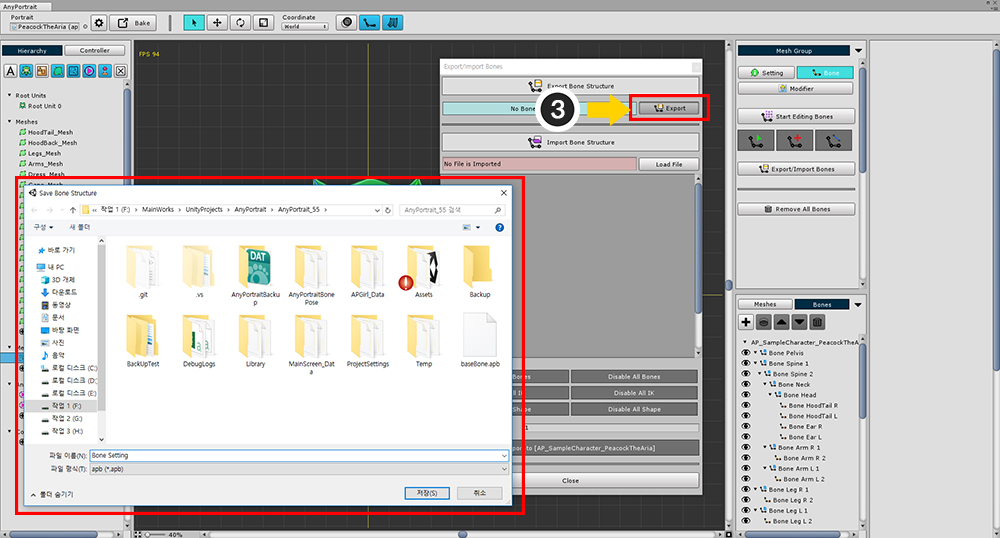
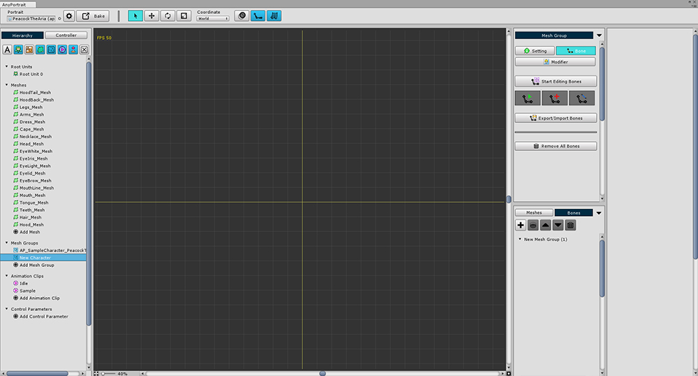
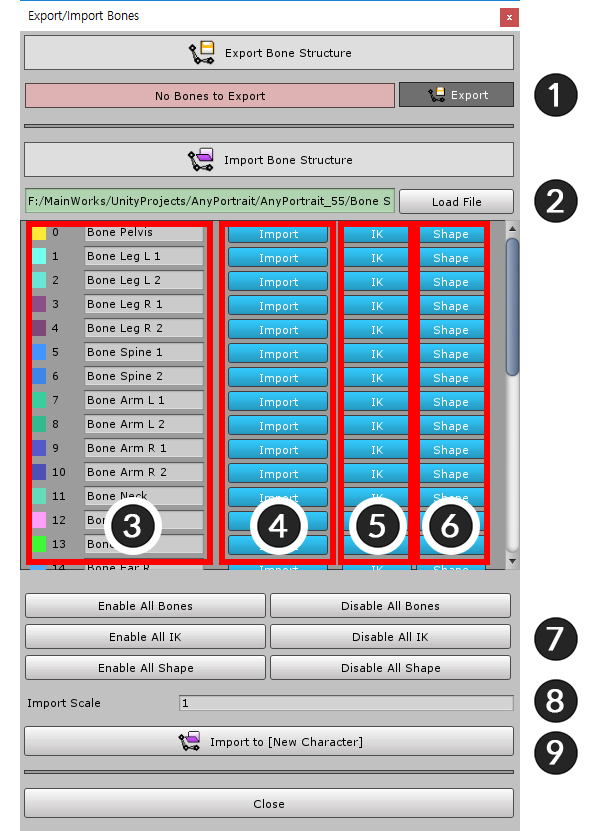
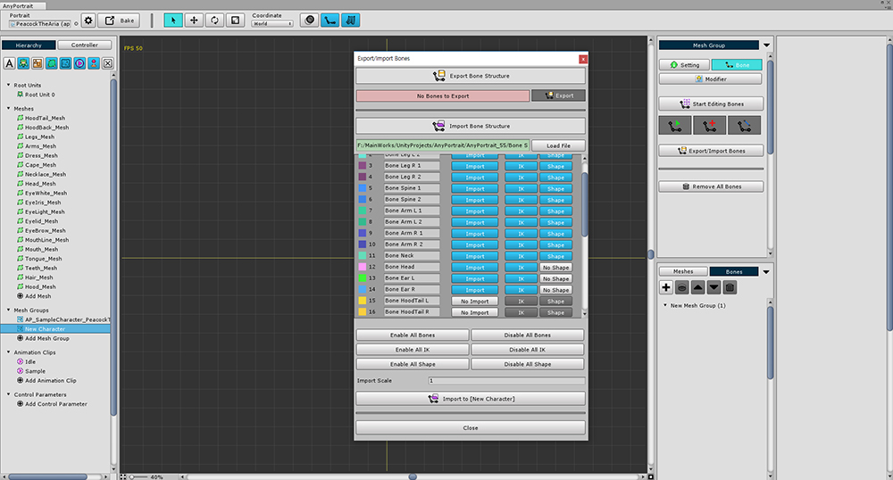
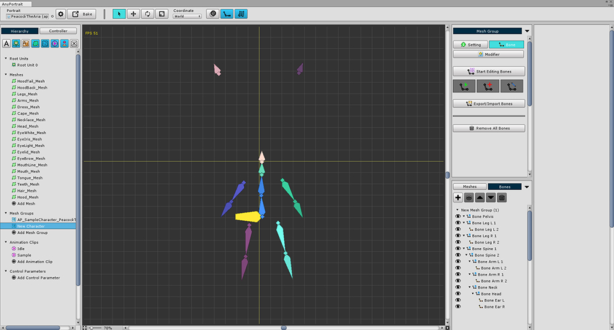

AnyPortrait > Manual > Export / Import Bone settings
Export / Import Bone settings
1.0.0
Export bone settings

(1) In the Bone tab of the mesh group, (2) click the Export / Import Bones button.

(3) Click the Export button to save the settings as a file.
Import bone settings

Prepare a new mesh group to import bone settings.
Another apPortrait is possible.

(1) Select the Bone tab.
(2) Press the Export / Import Bones button
(3) Press the Load File button,
(4) Open the saved file.

1. Export : Save as file
2. Load File : Open the file and prepare it for import
3. Bone Name : Bone names
4. Import : Whether to import the bone
5. IK : Whether to import IK Setting
6. Shape : Whether to import Shape Setting
7. Enable/Disable : Select or deselect all bones
8. Import Scale : The ratio of resizing saved data
9. Import Button : Import bone data into mesh group

You can import bone data from a file as shown in the screen above.


It is also possible to exclude some bones or exclude shapes from importing as above.